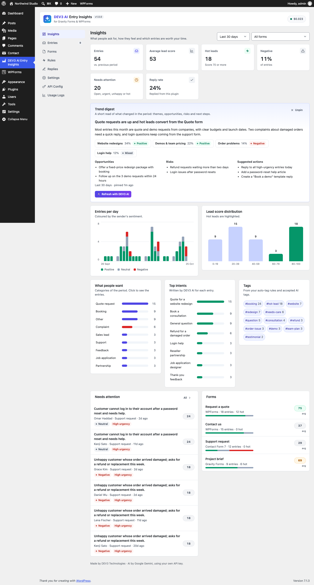
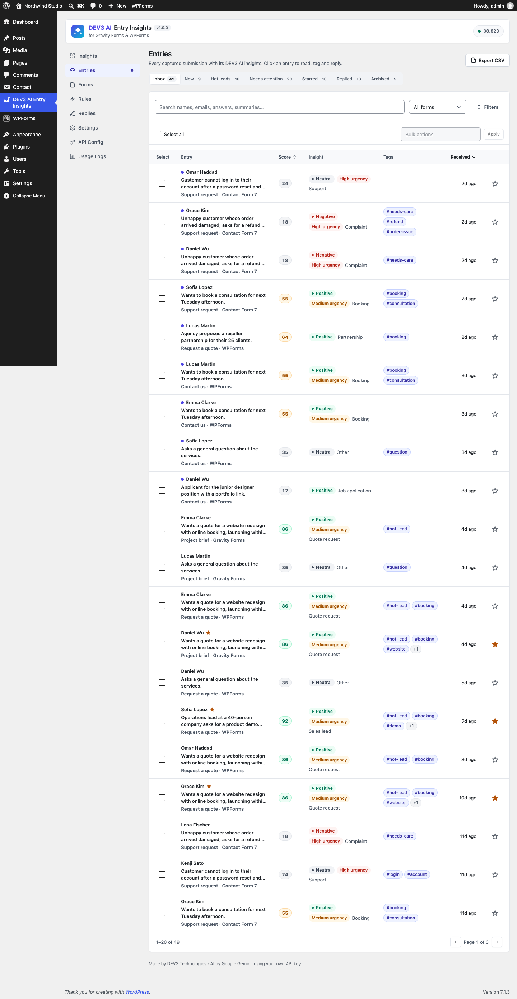
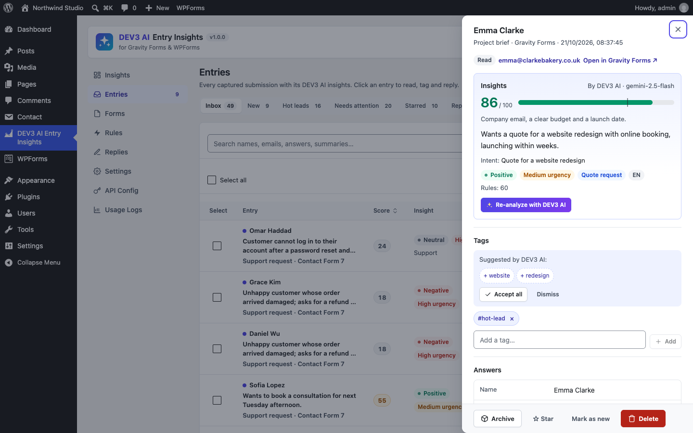
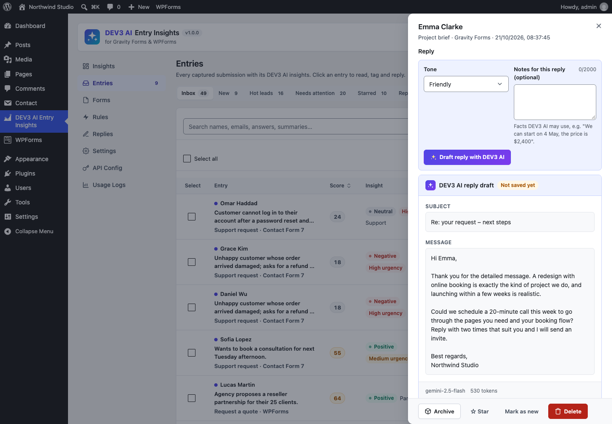
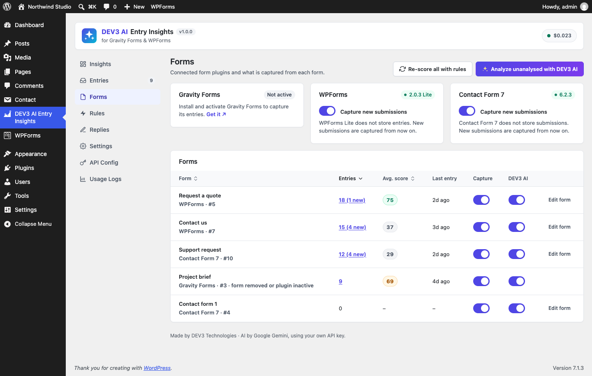
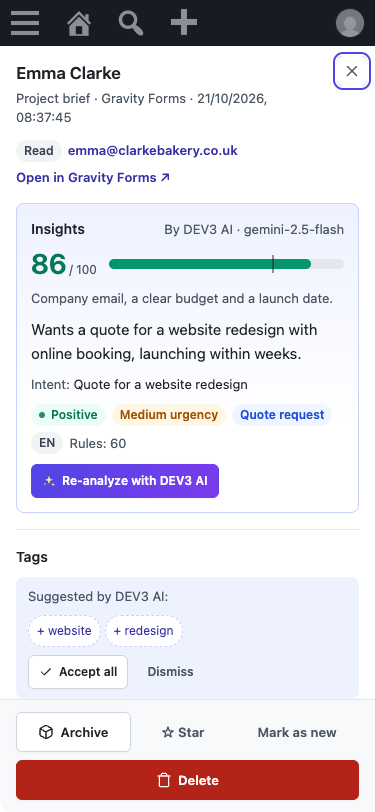

Installation
- In WordPress go to Plugins → Add New → Upload Plugin and upload
dev3-ai-entry-insights.zip. Activate it. - Make sure at least one supported form plugin is active: Gravity Forms 2.5+, WPForms Lite/Pro 1.8+ or Contact Form 7 5.8+.
- Open DEV3 AI Entry Insights in the admin menu. New submissions are captured from now on. Older Gravity Forms and WPForms Pro entries can be imported on the Forms screen.
Requirements: WordPress 6.0+, PHP 7.4+ (tested on 8.3). No licence key or activation is needed.
Google Gemini API key
- Go to Google AI Studio and create an API key.
- Paste it in API Config and click Validate. The key is stored encrypted and never sent to the browser. You can also define
DEV3EI_GEMINI_API_KEYinwp-config.php. - Optional: choose models (default
gemini-2.5-flash), set a monthly budget cap and turn AI off at any time. Usage Logs shows requests, tokens and estimated cost.
Without a key everything still works with rule-based insights: scores, sentiment, urgency, categories, tags, alerts, templates, the dashboard and CSV export.
Supported form plugins
| Plugin | How entries are captured | Import of older entries |
|---|---|---|
| Gravity Forms | gform_after_submission (spam and trash skipped). Compound fields (Name, Address, Checkbox) are flattened. An insights meta box appears on the Gravity Forms entry screen, and you can add the insights as an entry note. | Yes, through GFAPI::get_entries. |
| WPForms Lite / Pro | wpforms_process_complete. WPForms Lite keeps no entries, so this plugin stores its own copy. Spam-marked submissions are skipped. | Pro only (Lite stores nothing). |
| Contact Form 7 | wpcf7_mail_sent and wpcf7_mail_failed, so a broken mailer never loses a lead. Labels come from the form template. | No (CF7 stores nothing). |
On Forms you can switch capture and AI analysis off per form, turn a whole plugin off, re-score everything with your rules, or analyse all unanalysed entries with DEV3 AI in the background.
Entry insights
Every entry gets, right after it is captured:
- Rule-based values (instant, no network): lead score with reasons, sentiment, urgency, category, rule tags.
- DEV3 AI analysis (a few seconds later, in the background so the form never gets slower): a 1–2 sentence summary, intent, sentiment, category (sales lead, quote request, support, feedback, complaint, booking, job application, partnership, newsletter, spam, other), urgency, lead score 0–100 with a reason, language and up to 5 suggested tags.
If the AI call fails, the rule values stay and the error is shown on the entry. Use Re-analyze with DEV3 AI in the entry drawer, or the bulk action, at any time.
Entries inbox
Views: Inbox, New, Hot leads, Needs attention (open entries that are urgent, unhappy or hot), Starred, Replied, Archived. Filter by form, source, sentiment, category, urgency, tag and minimum score; search names, emails and answers; sort by date or score. Bulk actions: mark read/new, star, add/remove tag, archive, analyse with DEV3 AI, re-score with rules, delete. Export CSV exports the current filter, with spreadsheet formulas neutralised.
Click an entry to open the drawer: score gauge, summary, intent, badges, tags (accept or dismiss AI suggestions, add your own), all answers, the reply composer, an internal note and the history.
Insights dashboard
KPIs for 7, 30 or 90 days (entries with trend, average lead score, hot leads, negative share, needs attention, reply rate), entries per day by sentiment, lead-score distribution, categories, top intents, tags, a needs-attention list and per-form quality. Summarize trends with DEV3 AI writes a digest (headline, themes, opportunities, risks, actions) from the statistics and the one-line summaries only; it is a draft until you pin it.
Rules & auto-tags
- Score source: DEV3 AI score, rules only, or the average of both.
- Hot lead threshold (default 70) and starting score (default 20).
- Signals with editable points: phone left, company email, company field, budget field, buying words, tight timeline, detailed message, unhappy tone.
- Keyword points, e.g.
enterprise +20,student −15. - Auto-tags: when answers contain words, category/sentiment/urgency is, score is at least, form plugin or form is → add a tag. Tags added by a rule disappear again when the rule stops matching; tags you add stay.
- AI tags stay suggestions until accepted, unless you choose to apply them automatically.
- Try the rules scores a sample message without saving anything or calling the AI.
Replies
Draft reply with DEV3 AI writes a reply in the sender's language using your tone, sign-off and facts. Add notes for one reply (e.g. a price or a date). The draft opens in the review panel: edit subject and message, then Send, or regenerate or reject it. Nothing is sent automatically. Templates with {name}, {first_name}, {form}, {site}, {summary}, {email} work without AI. Replies are plain-text emails sent with wp_mail from the From name/address you set.
Settings
- Analyze new entries automatically (on by default when a key is set).
- Email alerts for hot leads, high urgency and/or negative sentiment, once per entry, to a list of addresses (default: the admin email).
- Retention in days (0 = keep forever), storing the page URL, deleting all data on uninstall.
Privacy
Only text answers are sent to Google Gemini. Phone, password, hidden, file, signature, payment and consent fields are never sent; emails are reduced to their domain and names to the first name. Passwords and card fields are not even stored. The core PII-masking option can mask the rest. Captured entries are included in WordPress's personal data export and erase tools. A privacy-policy text naming Google Gemini is added under Settings → Privacy.
Hooks for developers
| Hook | Type | Use |
|---|---|---|
dev3ei_adapters | filter | Add an adapter (extend Dev3\AiEntryInsights\Adapters\Adapter) for another form plugin. |
dev3ei_capture_fields | filter | Change the normalised fields [ {key,label,type,value} ] before storage. |
dev3ei_should_capture | filter | Return false to skip a submission. |
dev3ei_entry_captured | action | ( $id, $source, $form_id ) after capture. |
dev3ei_entry_analyzed | action | ( $entry, $ai ) after every analysis (push hot leads to a CRM). |
dev3ei_rule_category_patterns | filter | Keyword regexes for rule-based categories. |
dev3ei_rule_tags | filter | Tags added by rules for an entry. |
dev3ei_alert_email / dev3ei_reply_email | filter | Change alert or reply emails before sending. |
dev3ei_prompt_entry_insights, dev3ei_prompt_reply_draft, dev3ei_prompt_trend_digest | filter | Override prompt templates. |
dev3ei_queue_stale_after | filter | Seconds before the admin screens process waiting entries inline (default 30). |
REST API (dev3ei/v1, admins only, nonce required): entries, entries/<id>, entries/bulk, entries/<id>/analyze, …/reply-draft, …/reply, …/template, …/tags/accept, …/gf-note, stats, digest, digest/pin, forms, forms/config, forms/import, analyze-all, rules/preview.
FAQ
Does it slow down my forms?
No. Capture only saves the entry and applies the rules; the AI runs in the background (WP-Cron) or when you open the plugin.
Do I need Gravity Forms and WPForms?
No. Any one of Gravity Forms, WPForms or Contact Form 7 is enough, and you can use several at once.
Where are WPForms Lite entries stored?
In this plugin's own table (wp_dev3ei_entries), because WPForms Lite does not store entries.
Does deleting an entry here delete it in Gravity Forms?
No. Deleting a Gravity Forms entry removes our copy, but not the other way round.
What does the AI cost?
One short gemini-2.5-flash call per entry (a fraction of a cent). Set a monthly cap in API Config.
My site cannot reach itself (WP-Cron)
Entries waiting for AI are processed while the plugin screens are open. You can also run a real cron job.
Screenshots






Changelog
1.0.0 · 25 October 2026
- Initial release: Gravity Forms, WPForms and Contact Form 7 adapters, entry insights, inbox, dashboard and trend digest, rules and auto-tags, reply drafts and templates, alerts, CSV export, privacy tools.